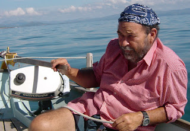
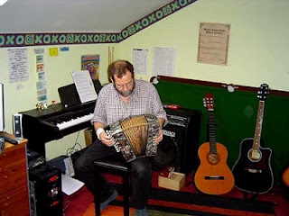
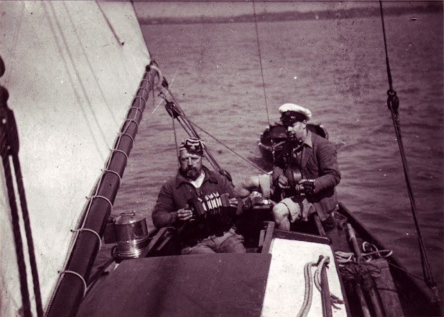

 |
| Flat calm dreams of piracy, off the Llyn Peninsula |
{kind=link}
(Strangely enough, I did not even know what that was, because it was from another dream. William Brown always drank something called lickrish water. I asked my mother what it was, and she didn't have the foggiest idea. She was always prepared to let me try, however, and bought me some liquorice allsorts as the makings of an experiment. I steeped the black ones overnight, and believe me it didn't work. In my imagination, though, I still sat in the cuddy drinking it. When I got a bit older I moved on to Brickwoods mild, which tasted just as vile.)
One of the things I did in my fetid, airless cuddy, was write. With the iron stove gently melting the soles of my plimsolls, I constructed huge novels involving (inevitably) the sea, and pirates, and me (the hero). Occasionally I would cease scribbling, take a swig of lickrish water, and go up on deck to survey the wild and lawless waters of Portchester or Fareham Creek, probably shooting a criminal or two before returning to the womb. Some days, in winter, I almost froze to death standing on the shore and contemplating the other me, me the writer, me the hero, down below somewhere warm inside that rotting coal hulk out there on the mud. And I knew that one day soon I'd be a writer, and make enough money very quickly to buy an abandoned barge and put a stove in. Possibly get Jean Rouse to come and share the heat. I was so young that it didn't even occur to me to install a bunk. Ah, such innocence.
Later on I took to sailing. Or rather, my old man introduced me to the great eternal joy. My father was a strange one, a very clever man of nil education, of dubious parentage and race, an inventor and a writer of romantic short stories, and pretty well incapable of holding down a job. My mother's parents hated him so much that when she fell pregnant (deliberately?) they still forbade her to marry him, and they had to go to court to win permission. Those were the days, eh? For their honeymoon they drove by motorbike from Portsmouth to Bala in North Wales in the depths of winter. No helmets, no proper gear, just overcoats and (my dad) a canvas ski cap worn back to front. It was wartime, so the headlight of the Ariel was confined to a slit, and they found a farmhouse that would take them in when they arrived in the dead of night. Joe Pritchard and his wife, a place called Dolwen Isaf. I tracked it down and visited about ten years ago. Iawn.
 |
| And after sailing - music! |
{kind=link}
His sailing friends were ridiculously varied. Richard Green, who played Robin Hood on telly. Uffa Fox the Cowes boat designer. David Maw the baby steriliser man. Even the Duke of Edinburgh, who took my old man sailing in his racer Bluebottle (can that be right? Was she called Bluebottle, and if so, is that why Charles became a Goon Show fan? No, memory's just clicked in - she was called Dragonfly. Too much lickrish water, Needle jnr.) But the finest and the longest of them all was an old ex-London River policeman called Albert Meadows - Pop. They met and began sailing together when Dad was in his early twenties, and I became a part of it when I was six or so.
Pop Meadows, also known as Uncle, was a giant of a man. His thumbs were bigger in diameter than my wrists. He adapted a Harrison Butler twenty-five foot cutter design to suit himself (got rid of the canoe stern and replaced it with a transom), and helped build her out of pitchpine on oak at a boatyard on Point. Then he lived on her until he got taken into a home and died. He'd always intended to be sailed out to sea in Sabrina when he was dead, and burned with her in the Viking fashion. Sorry, Pop. Not allowed.
The boat, the lovely boat, I also tracked down about six years ago, to a man on the Isle of Wight called Craig Nutter, a noted international yachtsman and boatyard owner, who took me and Viv and our sons Matti and Wilf for an amazing sail from Cowes across to the mainland and right up the Hamble River. I'm ashamed to say that I hogged the tiller all the way, recapturing my lost youth (wha'evva) and not even letting Matti have a go, selfish bastard that I am. (Wilf didn't give a toss. He's not into sailing.) The ghost of Albert Meadows, and my dad, were with me all the way. And they played their instruments.
Another dream of childhood. Pop Meadows had a Wheatstone concertina, my father a mandolin-banjo, which I still own. Together, with me on triangle sometimes, they were the Solent Minstrels, and another part of my growing imagination was that music, spreading across the rolling waters, percolating weirdly from the cockpit to the forepeak where I'd be put to go to sleep, haunting the lovely Newtown River of a summer's night. Alone with stories, alone with friends, alone with the great waters.
 |
| The Solent Minstrels, Pop Meadows and Farmer Needle on Sabrina. Mid 1930s |
{kind=link}
I've sailed with Julia on Peter Duck once (and she didn't hog the tiller, let me tell you!) and I hope to do so again before I get much older. Perhaps I'll sing it to you, Julia. It's called Pop Meadows, Old Farmer - and Me.
And it's true.
LATE NEWS: There's going to be a review of A Game of Soldiers in IEBR today, I'm told. Cally's given me this link:
{kind=link}
AH WELL MOMENT 1: My proposed title for my prisons thriller Kicking Off was Panopticon, which I dropped after seeking opinions of it on my website www.janneedle.com and on Facebook
I was interested to see a new novel reviewed in the Guardian last week - called Panopticon.
AH WELL MOMENT 2: I got a mention in the Scattered Authors Society newsletter this week. And once again I'm a female. The price of fame.
AH WELL MOMENT 3. Just tried for ten minutes to add a picture of A Game of Soldiers cover to this post. Computer says no
HEADS-UP MOMENT? Three friends of mine have suffered Kindle screen crashes recently. One occurred three weeks after the one-year guarantee period, and he got pretty short shrift. A Kindle's some sort of computer, isn't it? Should it fall down so quickly? Should you have no redress? Smells like a possible scandal in the making.
HEADS-UP MOMENT? Three friends of mine have suffered Kindle screen crashes recently. One occurred three weeks after the one-year guarantee period, and he got pretty short shrift. A Kindle's some sort of computer, isn't it? Should it fall down so quickly? Should you have no redress? Smells like a possible scandal in the making.